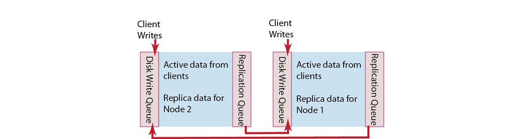

Handling replication
Data replication is distributed throughout the Couchbase cluster to prevent a single point of failure. Data replication is configurable on a bucket-level and node-basis.
Within a Couchbase cluster, you have active data and replica data on each node. Active data is data that was written by a client on that node. Replica data is a copy of an item from another node.
After writing an item to Couchbase Server, it makes a copy of this data from the RAM of one node to another node. Distribution of replica data is handled in the same way as active data: portions of replica data is distributed around the Couchbase cluster to different nodes to prevent a single point of failure.
Replication of data between nodes is entirely peer-to-peer based so that information is replicated directly between nodes in the cluster. There is no topology, hierarchy, or master-slave relationship between nodes in a cluster. When a client writes to a node in the cluster, Couchbase Server stores the data on that node and then distributes the data to one or more nodes within a cluster.
The following diagram shows two different nodes in a Couchbase cluster and illustrates how two nodes can store replica data for one another:
When a client application writes data to a node, that data is placed in a replication queue and then a copy is sent to another node. The replicated data is then available in RAM on the second node and placed in a disk write queue to be stored on disk at the second node.
The second node also simultaneously handles both replica data and incoming writes from a client. It puts both replica data and incoming writes into a disk write queue. If there are too many items in the disk write queue, this second node can send a backoff message to the first node. The first node will then reduce the rate at which it sends items to the second node for replication. This is sometimes necessary if the second node is already handling a large volume of writes from a client application.
If multiple changes occur to the same document waiting to be replicated, Couchbase Server can deduplicate the item. This means that, for the sake of efficiency, it only sends the latest version of a document to the second node.
If the first node fails in the system, the replicated data is still available at the second node. Couchbase can serve replica data from the second node nearly instantaneously because the second node already has a copy of the data in RAM. There is no need for the data to be copied over from the failed node or to be fetched from disk. Once replica data is enabled at the second node, Couchbase Server updates a map indicating where the data should be retrieved, and the server shares this information with client applications. Client applications can then get the replica data from the functioning node.
Providing data replication
You can configure different buckets to have different levels of data replication, depending how many copies of your data you need. For the highest level of data redundancy and availability, you can specify that a data bucket will be replicated three times within the cluster.
Replication is enabled once the number of nodes in your cluster meets the number of replicas you specify. For example, if you configure three replicas for a data bucket, replication will only be enabled once you have four nodes in the cluster.
After you specify the number of replicas you want for a bucket and then create the bucket, you cannot change the value. Therefore be certain you specify the number of replicas you truly want.